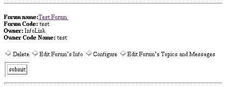

Editing Forums
This adminsitrative option will allow you to mananage all the
individual parameters of a forum. Choosing this option from the
adminsitrative menu will produce a list of all of the forums
on you system. Each forum will list its name and forum code which
is the same as the name of the subdirectory it is stored in. The
name of the forum owner and their code name from the owner database will
be included as well (qv manage owners) .

Underneath each forum listing will be a toolbar of options that allow
you or another owner who has access to the forum to manipulate the
settings of individual forums. There are four options: Delete, Edit Forum's
Info, Configure, Edit Forum's Topics and Messages. Each forum has its own
list and only one forum can be edited at one time. To edit a new forum you
must return to this menu.
Delete
Choosing this and clicking on submit will delete the forum from the
forum list. It will also delete all of the information about the forum
from the filesystem (the disk drives.) You will be asked to verify your
choice. If you continue with the deletion proceess you will be unable to
recover any forum messages or topics when this is finished.
Edit Forum's Info
This coice allows you to edit any of the parameters that were established
when the forum was created. You will be presented with a page that looks
like the create forum page but will all of the forums current values filled
into the text entry boxes. After making any changes to this forum choose the
preview changes command to be presented with a page showing how the new forum
information will be presented. If you are satisfied with the changes choose
the Change Forum button. If not the Edit Some More button
will allow you to return to the previous page with all of the changes
you most reciently made preserved.
Configure
This option will present you will a new menu of choices much like the Edit
Site Configuration menu. From this you can edit a forums configurable
variables, and create forum specific footers and headers. Unlike Edit
Site Configuration these changes only effect the current forum being
edited. (qv edit forum configuration)
Edit Forum's Topics and Messages
This will present you with a list of all the topics inside a particular
forum. Each topics name and how many message and replies it contains will
be listed allong with three options that allow modification of the topic.
Delete Topic, Edit Topic, and Edit Topics messages.
(qv. Edit Forum Topics and Messages)
Go on to Forum Configuration
Copyright © 1995, 1996 Board of Regents of the University
of Wisconsin System. All rights reserved.
|